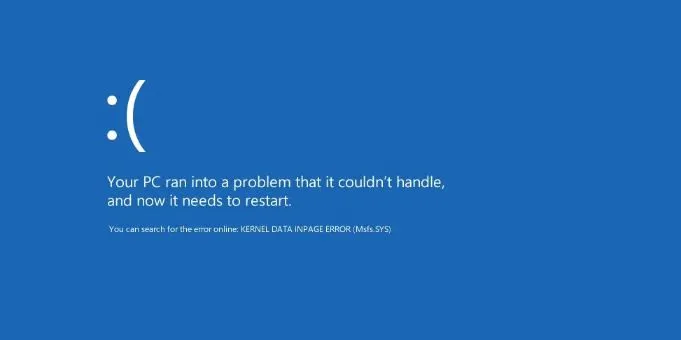
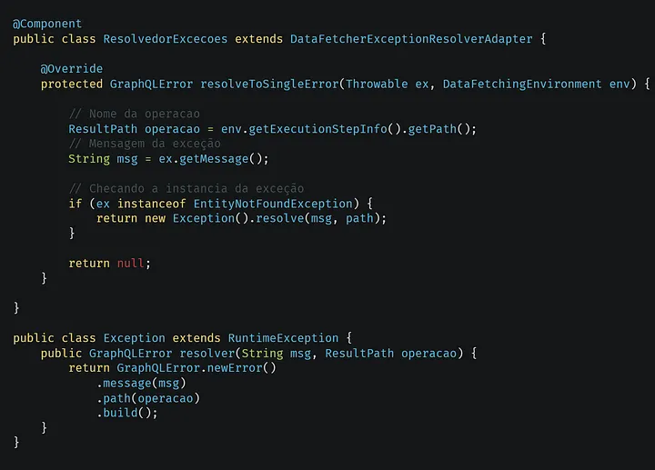

Criando uma API GraphQL com Java Spring Boot — Parte 8: Retornando Erros
Neste artigo aprenderemos a entregar erros personalizados da nossa API.

Exemplo de um erro famoso, a tela azul do Windows.
Resolvendo Exceções
Antes de começarmos a resolver exceções em nossa API, primeiramente criaremos um resolvedor global de exceções, que checará as instancias das nossas exceções. Abaixo um exemplo de um resolvedor de exceções global.

Exemplo de resolvedor de exceção global.
Implementando Resolução de Erros
Primeiramente, criaremos nosso resolvedor e nossa exceção para retornar.
Exemplo de resolvedor de exceção global.Exemplo de exceção.
Agora e só você testar outras exceções depois de jogá-las, e resolve-lás, e acabamos por hoje, abaixo deixarei links relacionado ao tópico.